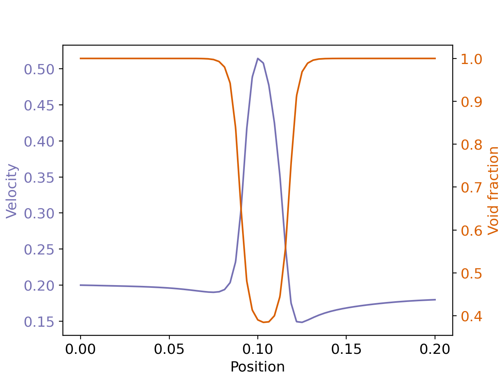
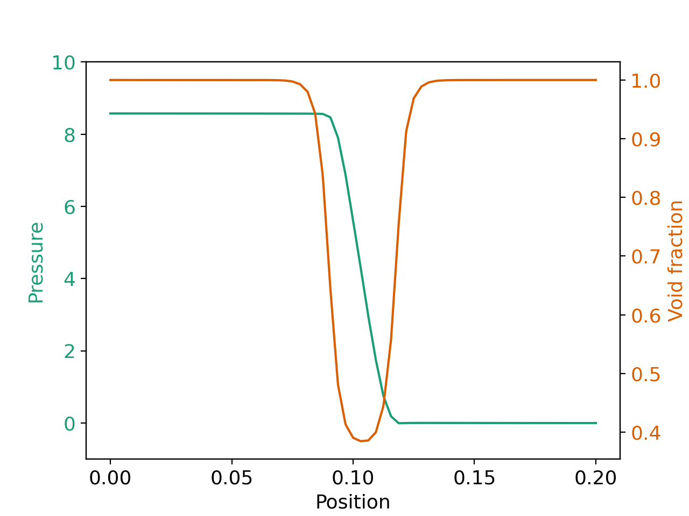

Cylindrical Packed Bed#
Features#
Solvers:
lethe-particlesandlethe-fluid-vansThree-dimensional problem
Uses the VANS solver without the coupling with DEM
Displays the selection of models and physical properties
Files Used in this Example#
Both files mentioned below are located in the example’s folder (examples/unresolved-cfd-dem/cylindrical-packed-bed).
Parameter file for particle generation and packing:
packing-particles.prmParameter file for CFD-DEM simulation of the packed bed:
flow-in-bed.prm
Description of the Case#
This example simulates air flow through a packing of particles. First, we use lethe-particles to fill the bed with particles. We enable check-pointing in order to write the DEM checkpoint files which will be used as the starting point of the CFD-DEM simulation. Then, we use the lethe-fluid-vans solver within Lethe to simulate air flow through the packed bed.
DEM Parameter File#
All parameter subsections are described in the parameter section of the documentation. To set-up the cylindrical packed bed case, we first fill the bed with particles. We introduce the different sections of the parameter file (packing-particles.prm) needed to run this simulation.
Mesh#
In this example, we are simulating a cylindrical packed bed that has a half length of 0.1 m, and a radius of 0.01 m. We use the GridGenerator::subdivided_cylinder function of Deal.II in order to generate the mesh. The cylinder is divided 16 times in the x direction. The following portion of the DEM parameter file shows the function called.
The mesh subsection specifies the computational grid:
subsection mesh
set type = dealii
set grid type = subdivided_cylinder
set grid arguments = 16:0.01:0.1
set initial refinement = 2
end
Simulation Control#
Another subsection, which is generally the one we put at the top of the parameter files, is the simulation control . time step, end time, log and output frequency are defined here. Additionally, users can specify the output folder for the simulation results in this subsection. The log frequency parameter controls the frequency at which the iteration number is printed on the terminal. If log frequency = 1000 the iteration number will be printed out every 1000 iterations. This is an easy way to monitor the progress of the simulation. A simulation time of 0.6 s was chosen with a time step of 1e-5 s. It it important to choose a long enough time as to allow all particles to come to rest. We store the output files generated in the folder output_dem:
subsection simulation control
set time step = 0.00001
set time end = 0.6
set log frequency = 1000
set output frequency = 1000
set output path = ./output_dem/
end
Warning
If an output path is chosen, you need to create the folder before launching the simulation. Otherwise, an error message will appear and the simulation will fail to launch.
Restart#
The volume-averaged Navier-Stokes (VANS) solver requires reading several DEM files. For this, we have to write the DEM simulation information. This is done by enabling the check-pointing option in the restart subsection. We give the written files a prefix lethe-particles set in the set filename option.
subsection restart
set checkpoint = true
set frequency = 10000
set filename = dem
end
Model Parameters#
The section on model parameters is explained in the DEM examples. We show the chosen parameters for this section:
subsection model parameters
set contact detection method = dynamic
set neighborhood threshold = 1.3
set particle particle contact force method = hertz_mindlin_limit_overlap
set particle wall contact force method = nonlinear
set integration method = velocity_verlet
end
Lagrangian Physical Properties#
The physical properties section of the particles allows us to determine the different parameters related to the particle such as its density, diameter, and the different coefficients that dictate the collision behaviour of the particles. Also, in this section we define the total number of particles for the simulation.
The gravitational acceleration as well as the physical properties of particles and walls are specified in the lagrangian physical properties subsection. These properties include as well the Young’s modulus, Poisson’s ratio, restitution coefficient, friction and rolling friction coefficients.
subsection lagrangian physical properties
set g = -9.8, 0.0, 0.0
set number of particle types = 1
subsection particle type 0
set size distribution type = uniform
set diameter = 0.001
set number = 10000
set density particles = 2500
set young modulus particles = 1e6
set poisson ratio particles = 0.3
set restitution coefficient particles = 0.2
set friction coefficient particles = 0.1
set rolling friction particles = 0.2
end
set young modulus wall = 1e6
set poisson ratio wall = 0.3
set restitution coefficient wall = 0.2
set friction coefficient wall = 0.1
set rolling friction wall = 0.3
end
Insertion Info#
The insertion info subsection manages the insertion of particles. It allows us to control the insertion of particles at each time step. This section is already explained in the DEM examples. However, further information regarding the information box will be given. The volume of insertion box should be large enough to fit all particles. Also, its bounds should be located within the mesh generated in the Mesh subsection.
subsection insertion info
set insertion method = volume
set inserted number of particles at each time step = 500
set insertion frequency = 1000
set insertion box points coordinates = 0, -0.01, 0 : 0.1, 0.01, 0.01
set insertion distance threshold = 2.2
set insertion maximum offset = 0.5
set insertion prn seed = 19
end
Floating Walls#
We need to pack the particles in the middle of the cylinder. Therefore, we create a stopper (floating wall) somewhere below the center of the cylinder. We chose the point with an x-coordinate of -0.01 to create the wall. We then define a normal to the wall at this point. We make sure that the end time of the floating wall is bigger than the simulation time to ensure that the particles remain suspended. This is shown in:
subsection floating walls
set number of floating walls = 1
subsection wall 0
subsection point on wall
set x = -0.01
set y = 0
set z = 0
end
subsection normal vector
set nx = 1
set ny = 0
set nz = 0
end
set start time = 0
set end time = 2
end
end
Running the DEM Simulation#
Launching the simulation is as simple as specifying the executable name and the parameter file. Assuming that the lethe-particles executable is within your path, the simulation can be launched on a single processor by typing:
or in parallel (where 8 represents the number of processors)
Lethe will generate a number of files. The most important one bears the extension .pvd. It can be read by popular visualization programs such as Paraview.
Note
The .vtu files generated by Lethe are compressed archives. Consequently, they cannot be postprocessed directly. Although they can be easily post-processed using Paraview, it is sometimes necessary to be able to work with the raw data. The python library PyVista allows us to do this.
Results DEM#
Packed particles at the end of simulation:

After the particles have been packed inside the cylindrical bed, it is now possible to simulate fluid flow through the packing.
VANS Parameter File#
The CFD simulation is to be carried out using the packed bed simulated in the previous step. We will discuss the different parameter file sections. The mesh section is identical to that of the DEM so it will not be shown here.
Simulation Control#
The simulation is run in steady state. The simulation control section is shown:
subsection simulation control
set method = steady
set output path = ./output/
end
Physical Properties#
The physical properties subsection allows us to determine the density and viscosity of the fluid. We choose a density of 1 and viscosity of 0.00001 as to simulate the flow of air.
subsection physical properties
subsection fluid 0
set kinematic viscosity = 0.00001
set density = 1
end
end
Initial Conditions#
For the initial conditions, we choose zero initial conditions for the velocity.
subsection initial conditions
set type = nodal
subsection uvwp
set Function expression = 0; 0; 0; 0
end
end
Boundary Conditions#
For the boundary conditions, we set a slip boundary condition on the walls of the cylinder (ID = 0), an inlet velocity of 0.2 m/s at the lower face of the cylinder (ID = 1) and an outlet at the upper face of the cylinder (ID = 2).
subsection boundary conditions
set number = 2
subsection bc 0
set id = 0
set type = slip
end
subsection bc 1
set id = 1
set type = function
subsection u
set Function expression = 0.2
end
subsection v
set Function expression = 0
end
subsection w
set Function expression = 0
end
end
subsection bc 2
set id = 2
set type = outlet
end
end
The additional sections that define the VANS solver are the void fraction subsection and the CFD-DEM subsection. These subsections are described in detail in the CFD-DEM parameters .
Void Fraction#
Since we are calculating the void fraction using the packed bed of the DEM simulation, we set the mode to dem. For this, we need to read the dem files which we already wrote using check-pointing. We therefore set the read dem to true and specify the prefix of the dem files to be read. We now choose a smoothing length for the void fraction as to reduce discontinuity which can lead to oscillations in the velocity. The length we choose is three time the particle diameter.
subsection void fraction
set mode = pcm
set read dem = true
set dem file name = dem
set l2 smoothing length = 0.003
end
CFD-DEM#
We also enable grad div stabilisation in order to improve local mass conservation. The default value of the grad div stabilization length, which is \(1\), is used.
Note
For certain simulations, this parameter should be disabled to improve stability of the solver.
subsection cfd-dem
set grad div = true
set drag force = true
set buoyancy force = true
set drag model = rong
set post processing = true
set vans model = modelA
set drag coupling = implicit
end
We determine the drag model to be used for the calculation of particle-fluid forces. All of the supported drag models are listed in CFD-DEM section of the parameters guide. Other optional forces that can be enabled are the buoyancy force, the shear force and the pressure force. As we are simulating a static bed, we choose to disable these forces. The VANS model we are solving is model A. Other possible option is model B. Furthermore, we set drag coupling = implicit since we are running a steady-state simulation. Using an explicit or semi-implicit formulation here would lead to unphysical results.
Finally, the linear and non-linear solver controls are defined.
Non-linear Solver#
subsection non-linear solver
subsection fluid dynamics
set tolerance = 1e-9
set max iterations = 10
set verbosity = verbose
end
end
Linear Solver#
subsection linear solver
subsection fluid dynamics
set method = gmres
set max iters = 2000
set max krylov vectors = 2000
set relative residual = 1e-3
set minimum residual = 1e-10
set preconditioner = ilu
set ilu preconditioner fill = 2
set ilu preconditioner absolute tolerance = 1e-12
set ilu preconditioner relative tolerance = 1.00
set verbosity = verbose
end
end
Running the VANS Simulation#
The simulation is run using the lethe-fluid-vans application. Assuming that the lethe-fluid-vans executable is within your path, the simulation can be launched as per the following command:
Results VANS#
The results are shown in the plots below. The first plot visualises the velocity of the fluid and the void fraction along the center axis of the cylinder. We see that the fluid rapidly accelerates in as the void fraction decreases to ensure mass conservation. The second plot displays the pressure drop resulting from the particle-fluid interactions. The quasi totality of the pressure drop occurs within the bed of particles.
 